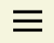

MuMa - acronimo di Music Map- è un servizio che consente agli utenti di condividere la musica che ascoltano tracciandola su una mappa.
Che canzone ascoltavi in vacanza l’anno scorso?
Cosa ti ricorda casa?
Come suona il tuo posto speciale?
Aggiungilo su MuMa!
Dopo aver creato il tuo account Muma , inizia a scoprire nuovi posti e nuova musica. Più utilizzi MuMa, più noi impariamo a conoscerti e possiamo consigliarti musica e luoghi adatti per te.
Dopo che avrai fatto l’accesso, ti troverai nella homepage ‘Esplora’, qui puoi muoverti sul planisfero e vedere quello che gli altri utenti hanno condiviso.
Usa o per fare una ricerca filtrata per città o per genere musicale.
Cliccando su  accedi alla pagina ‘Seguiti’ dove puoi visualizzare quello che gli utenti che segui condividono, ripubblicano, commentano o mettono ‘mi piace’.
In qualsiasi schermata troverai in basso a destra l’icona della tua foto profilo, toccandola visualizzerai il tuo account, personalizzalo nel modo che preferisci!
Su potrai cambiare le impostazioni del tuo account e metterti in contatto con il nostro team.
Premendo sopra ‘La tua MuMa’ avrai accesso alla tua mappa personale dove puoi visualizzare tutto quello che hai tracciato. Tutti i post possono sempre essere modificati.
Usando puoi aggiungere nuovi brani e creare nuove playlist. Puoi moderare la visibilità di ogni tuo nuovo contenuto rendendolo pubblico cioè visibile a tutta la community, privato e quindi visibile solo alle persone che ti seguono o segreto ossia visualizzatile solo da te.